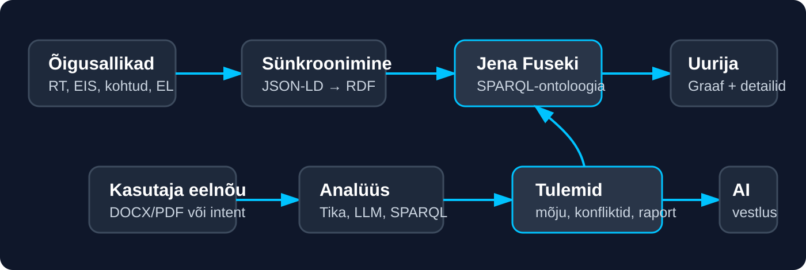
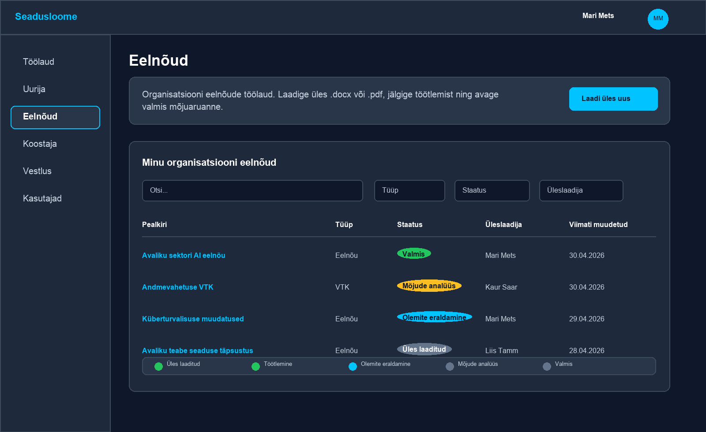
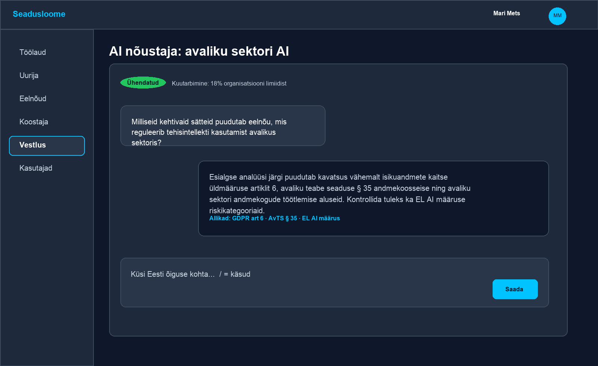
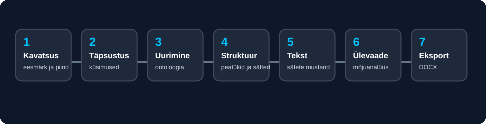
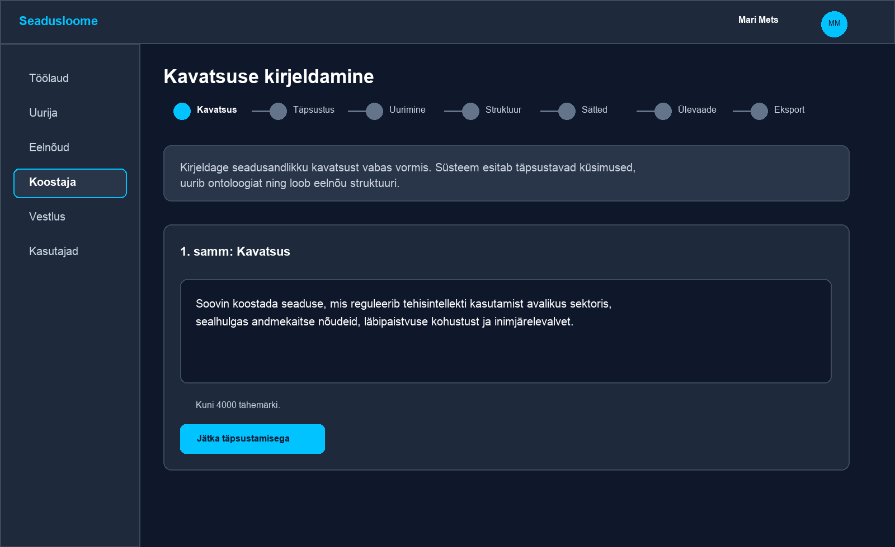

Eesti õigusontoloogia nõustamistarkvara ametnikele, kes kavandavad, analüüsivad ja koostavad õigusakte.
Mõista seoseidGraaf näitab, milliseid seadusi, sätteid, kohtuotsuseid ja EL allikaid kavatsus puudutab.
Hinda mõjuÜleslaetud eelnõust leitakse viited, võimalikud konfliktid, lüngad ja vastavusriskid.
Koosta kiireminiAI vestlus ja koostaja aitavad kavatsuse muuta kontrollitavaks eelnõu mustandiks.
Kasutamiseks ministeeriumi või asutuse sisetöös. Süsteem toetab juristi otsust, kuid ei asenda õiguslikku vastutust ega lõplikku ekspertiisi.
Sisukord
1. Mis on Seadusloome?
2. Miks seda vaja on?
3. Põhimõte ja töövoog
4. Töölaud ja navigeerimine
5. Eelnõud ja mõjuanalüüs
6. Ontoloogia uurija
7. AI vestlus
8. AI koostaja
9. Kasutuslood ja näited
10. Turvalisus ja head tavad
1. Mis on Seadusloome?
Seadusloome on nõustamistarkvara, mis aitab ametnikul näha kavandatava õigusakti mõju Eesti ja Euroopa õigusruumis enne, kui tekst liigub järgmisse kooskõlastus- või otsustusetappi.
Kasutaja saab süsteemi laadida eelnõu või väljatöötamiskavatsuse faili, kirjeldada kavatsust vabas keeles, uurida õigusontoloogia graafi, küsida AI-lt kontrollitavaid küsimusi ning koostada uue eelnõu mustandit sammhaaval. Süsteem seob kasutaja töö olemasoleva õigusraamistikuga: kehtivad seadused, varasemad eelnõud, Riigikohtu lahendid, EL õigusaktid ja EL kohtulahendid.
Lühidalt: Seadusloome ei ole lihtsalt dokumendihaldus ega juturobot. Selle keskmes on õigusontoloogia: masinloetav seoste võrk, mille kaudu saab küsida, millist normi, mõistet, kohtupraktikat või EL kohustust kavandatav muudatus puudutab.
Mida saab teha?
Leida seoseid. Otsi sätet, seadust, eelnõud või kohtulahendit ja vaata selle naabreid graafis.
Analüüsida eelnõu. Laadi üles .docx või .pdf ja saa olemiotsing, mõjuanalüüs ning eksporditav aruanne.
Küsida nõu. AI vestlus kasutab ontoloogiat ja RAG-i, et vastused oleksid seotud allikatega.
Koostada mustand. AI koostaja juhib kavatsusest läbi küsimuste, uurimise, struktuuri, sätete ja ekspordini.
2. Miks seda vaja on?
Eesti õigusloome kvaliteet sõltub sellest, kui vara on näha kavandatava muudatuse tegelik mõju. Praktikas on õigusruum suur ja killustunud: ühe uue kohustuse lisamine võib puudutada andmekaitset, avalikku teavet, haldusmenetlust, karistusõigust, eriseadusi, Riigikohtu praktikat ja EL õigusakte korraga.
Seadusloome aitab vähendada kolme tüüpilist riski.
Varjatud konfliktid: kavandatav norm võib korrata, kitsendada või vaidlustada kehtivat sätet.
Lüngad: eelnõu võib jätta reguleerimata rakendamise, järelevalve, sanktsioonid, üleminekusätted või EL direktiivi osad.
Teadmuse kadu: varasemad eelnõud ja kohtulahendid on olemas, kuid neid ei leita õigel hetkel üles.

Skeem 1. Õigusallikad sünkroonitakse ontoloogiasse; kasutaja eelnõu analüüsitakse selle võrgustiku vastu.
Süsteemi andmekihis kasutatakse õigusallikate korpust, mis hõlmab muu hulgas 615 kehtivat seadust, 22 832 eelnõud, 12 137 Riigikohtu lahendit, 33 242 EL õigusakti ja 22 290 EL kohtulahendit. Kasutaja ei pea kõiki neid allikaid ise läbi otsima; ta saab alustada oma eelnõust, küsimusest või õiguslikust mõistest.
3. Põhimõte ja töövoog
Seadusloome töövoog on iteratiivne. Ametnik sisestab kavatsuse või dokumendi, süsteem teeb automaatse analüüsi, kasutaja vaatab tulemused üle, parandab teksti ning kordab analüüsi kuni riskid ja ebaselgused on käsitletud.
Ülevaade teie eelnõudest, vestlustest, koostamissessioonidest ja järjehoidjatest.
Alustamiseks, pooleliolevate tööde leidmiseks ja viimaste tegevuste kontrolliks.
Uurija
D3 graaf, otsing, kategooriad, detailpaneel ja ajafilter.
Õigusaktide, sätete, mõistete, kohtupraktika ja EL seoste uurimiseks.
Eelnõud
Faili üleslaadimine, töötluse staatus, mõjuaruanne ja kustutamine.
Olemasoleva eelnõu või VTK automaatseks analüüsiks.
Koostaja
Seitsmesammuline AI töövoog kavatsusest DOCX mustandini.
Uue seaduse või VTK eeltöö loomiseks.
Vestlus
Allikatega põhjendatud AI nõustaja, vajadusel seotud konkreetse eelnõuga.
Küsimuste, võrdluste ja kontrollnimekirjade jaoks.
4. Töölaud ja navigeerimine
Töölaud on kasutaja alguspunkt. Siit näeb pooleliolevaid eelnõusid, koostamissessioone, vestlusi, organisatsiooni infot, järjehoidjaid ja viimaseid tegevusi. Vasak menüü viib põhivaadete juurde.
Ekraanivaate näide. Töölaud koondab kiirlingid, tegevused ja järjehoidjad.
Hea alustamisjärjekord
Kui teil on olemas eelnõu või VTK fail, avage Eelnõud ja laadige dokument üles.
Kui teil on vaid eesmärk või probleemikirjeldus, avage Koostaja ja alustage kavatsuse kirjeldamisest.
Kui soovite enne kirjutamist õigust uurida, avage Uurija ja otsige lähim seadus, säte või mõiste.
Kui teil on konkreetne küsimus, avage Vestlus; eelnõu detailvaatest saab vestluse siduda dokumendi kontekstiga.
5. Eelnõud ja mõjuanalüüs
Eelnõud on koht, kus üles laadida .docx või .pdf dokumente ja jälgida automaatset töötlust. Sama vaade toetab tavalist eelnõud ja VTK-d. Kui eelnõu põhineb VTK-l, saab need omavahel siduda, et hilisem analüüs näitaks ka arenguloogikat.

Ekraanivaate näide. Eelnõude tabelis saab filtreerida tüübi, staatuse, üleslaadija ja kuupäeva järgi.
Mis juhtub pärast üleslaadimist?
Üles laaditud: fail salvestatakse krüpteeritult ja lisatakse taustatöö järjekorda.
Töötlemine: tekst eraldatakse dokumendist Apache Tika abil.
Olemite eraldamine: süsteem leiab seaduste, paragrahvide, EL aktide, kohtulahendite ja õigusmõistete viited.
Mõjude analüüs: SPARQL-päringud ja AI analüüs võrdlevad eelnõud ontoloogiaga.
Valmis: detailvaates saab avada mõjuaruande, minna graafi mõjutatud üksusi vaatama või eksportida aruande DOCX-formaadis.
Näide: kui laadite üles eelnõu „Tehisintellekti kasutamine avalikus sektoris“, võib süsteem leida seosed isikuandmete kaitse, avaliku teabe, haldusmenetluse, järelevalve pädevuse ja EL AI määrusega. Aruanne aitab näha, kas tekstis on olemas õiguslik alus, vastutav asutus, vaidlustamise kord ja üleminekusätted.
6. Ontoloogia uurija
Uurija on interaktiivne graafivaade. See sobib olukorraks, kus tahate ise liikuda õigusruumi seoste vahel: alustada seadusest, sätetest, eelnõust, Riigikohtu lahendist või EL õigusaktist ning uurida, mis on nendega seotud.
Ekraanivaate näide. Graafis saab otsida, suumida, avada detailpaneeli ning lisada olulisi üksusi järjehoidjatesse.
Mida uurijas teha?
Otsida: sisestage seaduse nimi, paragrahv, mõiste, eelnõu või kohtulahendi tunnus.
Drill-down: avage esmalt kategooria, seejärel konkreetne olem ja selle naabrid.
Vaadata detaili: detailpaneel näitab metaandmeid, seoseid, versiooniajalugu ja allika linki.
Seostada eelnõuga: eelnõu detailist avatud graaf saab esile tõsta selle eelnõu mõjutatud üksused.
Järjehoidja: salvestage sageli kasutatavad sätted või lahendid töölauale.
Praktiline nipp: alustage laia kategooriaga ja piirake vaadet järk-järgult. Suurte õigusvõrgustike puhul ei renderda süsteem korraga kümneid tuhandeid sõlmi, vaid laeb andmeid vajaduse järgi.
7. AI vestlus
Vestlus on õigusnõustaja, mis kasutab ontoloogiat, RAG-otsingut ja vajadusel tööriistapäringuid. Vestluse saab jätta üldiseks või siduda konkreetse eelnõuga, et AI arvestaks selle dokumendi mõjuaruannet ja konteksti.

Ekraanivaate näide. Vestlus vastab allikapõhiselt ja kuvab kasutuse limiidi olekut.
Head küsimuse näited
„Milliseid kehtivaid sätteid puudutab eelnõu, kui reguleerime AI kasutamist avalikus sektoris?“
„Võrdle seda kavatsust isikuandmete kaitse üldmääruse artikli 6 nõuetega.“
„Leia Riigikohtu lahendid, mis käsitlevad avaliku teabe juurdepääsupiiranguid.“
„Koosta kontrollnimekiri, mida peaksin enne kooskõlastusringi üle vaatama.“
„Selgita, millised sätted võivad vajada rakendusakte või üleminekusätteid.“
Oluline: AI vastust tuleb käsitleda nõuandva töövahendina. Kontrollige viidatud allikaid ja otsustage lõplik õiguslik lahendus ametliku menetluse, juristi ja poliitikakujundaja rollide järgi.
8. AI koostaja
Koostaja on mõeldud uue õigusakti või VTK eeltöö jaoks, kui alguses on olemas probleem, eesmärk või poliitikavalik, kuid mitte veel terviklik tekst. Süsteem juhib töö läbi seitsme sammu.

Skeem 3. AI koostaja töövoog kavatsusest ekspordini.

Ekraanivaate näide. Esimeses sammus kirjeldab kasutaja kavatsuse vabas vormis.
Näide: AI avalikus sektoris
Kasutaja kirjeldab kavatsust: „Soovin reguleerida tehisintellekti kasutamist avalikus sektoris, sh andmekaitset, läbipaistvust ja inimjärelevalvet.“ Koostaja küsib täpsustusi: millised asutused on hõlmatud, kas seadus loob uue järelevalvepädevuse, millised riskitasemed kuuluvad keelatud või kõrge riskiga kasutuse alla ning kuidas lahendatakse registri- ja aruandluskohustus.
Pärast täpsustusi uurib süsteem ontoloogiat, pakub struktuuri, koostab sätted, käivitab integreeritud mõjuülevaate ja võimaldab eksportida DOCX mustandi. Kasutaja saab igas etapis teksti muuta; AI ei lukusta otsust.
9. Kasutuslood ja näited
Kasutuslugu
Kuidas alustada
Tulemus
Uue seaduse kavatsus
Koostaja → „Alusta uut koostamist“ → kirjelda eesmärk ja sihtrühm.
Täpsustatud küsimused, struktuur, sätted ja DOCX mustand.
Olemasoleva eelnõu kontroll
Eelnõud → laadi .docx/.pdf üles → oota staatust „Valmis“.
Mõjuaruanne, viidatud allikad, konfliktid ja lüngad.
EL direktiivi ülevõtmine
Vestlus või Uurija → otsi direktiiv või seotud EL õigusakt.
Nimekiri Eesti sätetest ja võimalikest katmata nõuetest.
Kohtupraktika kontroll
Uurija → otsi säte või mõiste → vaata seotud Riigikohtu lahendeid.
Asjakohased lahendid enne normi sõnastamist.
Kooskõlastusringi ettevalmistus
Vestlus → palu kontrollnimekirja või riskiülevaadet eelnõu kohta.
Kontrollitav nimekiri lahtistest küsimustest.
Organisatsiooni teadmuse hoidmine
Kasuta järjehoidjaid, kinnitatud vestlusi ja eelnõu seoseid.
Hiljem leitav põhjendus ja allikate rada.
10. Turvalisus ja head tavad
Eelnõud ja VTK-d võivad enne avalikustamist olla poliitiliselt tundlikud. Seetõttu kasutab Seadusloome organisatsioonipõhist ligipääsu, krüpteeritud failisalvestust, auditeerimist ja kontrollitud kustutamist.
Organisatsiooni piir: kasutaja näeb ainult oma organisatsiooni eelnõusid, vestlusi ja aruandeid.
Krüpteerimine: üleslaetud failid ja parsitud tekst salvestatakse krüpteeritult.
Audit: olulised tegevused, nagu üleslaadimine, vaatamine, kustutamine ja vestlusmuudatused, logitakse.
Säilitamine: eelnõu säilib kuni omanik selle kustutab; 90 päeva tegevusetuse korral kuvatakse alleshoidmise hoiatus.
Kustutamine: kustutamisel eemaldatakse fail, seotud nimega graaf ja andmebaasikirjed.
Hea tava: ärge sisestage vestlusse rohkem isikuandmeid või salastatud detaile, kui analüüsiks vajalik. Hoidke poliitilised valikud ja lõplik õiguslik otsus väljaspool AI automaatset soovitust ning dokumenteerige, miks otsus tehti.
Kiirkontroll enne töö lõpetamist
Kas mõjuaruanne on valmis ja kriitilised seosed läbi vaadatud?
Kas EL, Riigikohtu ja kehtivate sätete viited on kontrollitud algallikast?
Kas vestluses saadud soovitused on vajadusel eelnõu tekstis või seletuskirjas põhjendatud?
Kas tundlik mustand on vajadusel kustutatud või teadlikult alles hoitud?